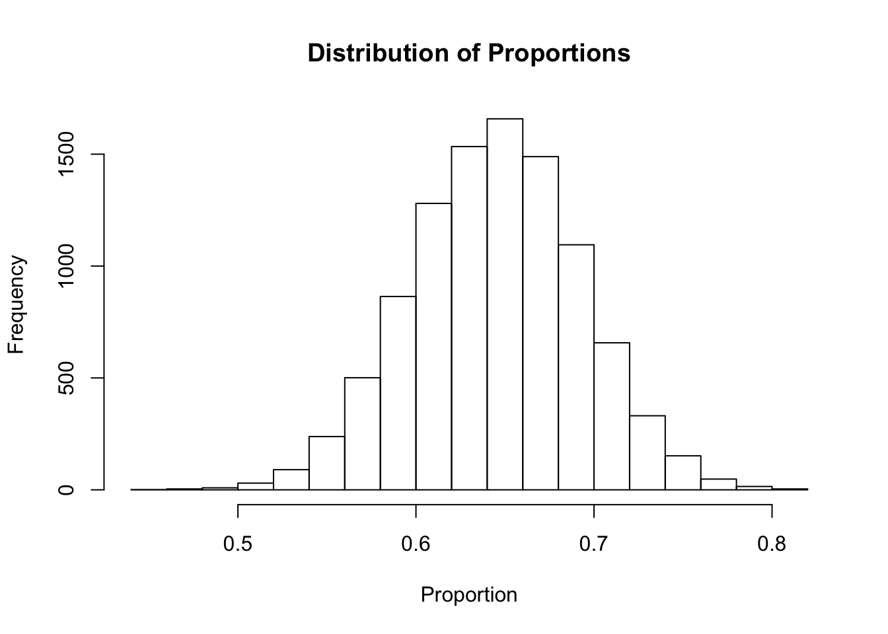

6.2 Size matters, but how so?
It is true that size matters. However, people tend to paint some variant of this false dichotomy - results are accurate if the sample size is arbitrarily large (e.g., ~50k individuals, or some percentage of the population size), and completely inaccurate otherwise. But more data doesn’t necessarily mean appropriate data. For instance, having data on all Singaporean Chinese doesn’t really help me understand Singaporean Malays better. The dichotomy is also terribly unhelpful, because what we want is to be able to draw big conclusions from small data32. In fact, we do this all the time - we conduct interviews to hire people, we date others before entering into a serious relationship, we administer written tests to measure area-specific knowledge, we audition actors before casting them in a role, and more. While understanding that these processes are not perfect, we do expect them to provide us with sufficient information on which to base our bigger decisions.
But how certain can we be? This question is key. First, we need the following information: what are the sampling probabilites for each respondent in the sample? In other words, how likely is each member to be selected into the sample? If they were selected at random33, there are established methods to calculate uncertainty around our findings34.
Let’s do a small simulation exercise here to demonstrate how these calculations work, without having to read the math35. Code here is written in R. A simulation means that we can determine what is the ‘truth’ in a hypothetical population, and then use the computer to draw samples from this population36 to see how sampling (and sample sizes) work. Our quantity of interest is the proportion of people who like durian. We define the population such that 65% of people (in our population) like durian (i.e., \(\Pr(\text{Likes Durian}) = 0.65\))37.
# Determine the sample size
n <- 100
# Draw samples from a population, where Pr(Likes Durian) = 0.65
sample <- rbinom(n, 1, p=0.65)
# Calculate the proportion of people who report liking durian
sum(sample)/n## [1] 0.61The number produced above is 0.61, but if you run the code above multiple times, you will realize the number produced is different each time run it (i.e., each time you draw a new sample). This makes sense, since samples are drawn randomly. Since we know the true value of \(\Pr(\text{Likes Durian})\), we also know how far off these sample estimates of \(\Pr(\text{Likes Durian})\) tend to be. The next step in this exercise is to draw a large number of samples of the same size to show how much these sample proportions can vary.
# Determine the sample size
n <- 100
# Draw 10000 samples of the same size
sample_no <- 1:10000
samples <- lapply(sample_no, function(x) rbinom(n,1,p=0.65))
proportions <- lapply(samples, function(x) sum(x)/n)
# Visualize the proportions with a histogram
hist(unlist(proportions),
main="Distribution of Proportions",
xlab="Proportion")
You can see that the distribution of proportions from these samples looks (somewhat) like a bell curve38. Let’s now summarize this distribution with some numbers.
# Get the mean of all proportions,
# rounded to 2 decimal places
round(mean(unlist(proportions)),2)## [1] 0.65# Get the 2.5th and 97.5th percentiles
quantile(unlist(proportions), prob=c(0.025, 0.975))## 2.5% 97.5%
## 0.56 0.74What do these numbers tell us? If you realize, the mean of the distribution of sample proportions is, in fact, the true value of \(\Pr(\text{Likes Durian})\). This demonstrates that even with relatively small samples, it is possible to recover the true population value through repeated sampling. The only difficulty is that we can seldom get so many samples, so the quantile values are of more help. The quantile values tell us that 95% of all the sample proportions will fall between 0.57 and 0.74. This gives us some measure of uncertainty. In other words - if I take a single sample of size 100, 95% of the time the proportion of those who like durian calculated from this sample will fall between 0.57 and 0.74 (given that the true value is 0.65)39. In other words, for this particular scenario (i.e., 100 observations, true proportion = 0.65), sample estimates will differ from the true value by at most 9 percentage points 95% of the time. This is the fundamental basis of claims by researchers that a survey has a certain “margin of error”.
So what happens when we increase the sample size? Let us run the same code again, but increase the sample size to 1000.
# Determine the sample size
n <- 1000
# Draw 10000 samples of the same size
sample_no <- 1:10000
samples <- lapply(sample_no, function(x) rbinom(n,1,p=0.65))
proportions <- lapply(samples, function(x) sum(x)/n)
# Get the 2.5th and 97.5th percentiles
quantile(unlist(proportions), prob=c(0.025, 0.975))## 2.5% 97.5%
## 0.620 0.679You will realize here that the interval for the quantile values have narrowed40. This shows that with a bigger sample size, our uncertainty around the true estimate also shrinks.
Our little simulation exercise has shown a number of things:
- The basic intuition is correct - larger sample sizes in fact produce estimates that are less susceptible to sampling error (that is, estimates generally fall closer to the true value).
- However, this basic intuition matters less than we often think. Even a relatively small sample size of 1000 (as asserted by the commentator in Chapter 6.1) produces estimates quite close to the true value (in this case, within 3 percentage points 95% of the time).
What is important here, however, is that these estimates can only be calculated in this manner if we have a probability sample - that is, if we know the sampling probabilites for each respondent in the sample41. If we do not know how respondents in a sample were recruited, there is no way to determine whether purported findings actually reflect the population, and how much uncertainty there is around them.
This is not to say that there is no way to calculate a “margin of error” or bounds of uncertainty for non-probability samples. Researchers have been developing new and innovative ways to recover reliable estimates even with non-probability samples, as “big data” comes to the forefront. Unfortunately, people are often careless and apply methods meant for probability samples to non-probability samples, expecting them to work in the same way. We will explore this in the next section.
The obsession with big data is sometimes misguided, especially if this suggests ‘small data’ is useless or inferior. Big data is mostly useful for other reasons rather than its ‘bigness’ (i.e., the sheer number of observations). See Matthew Salganik’s subsection on this in his book Bit by Bit for a good treatment of this subject: https://www.bitbybitbook.com/en/1st-ed/observing-behavior/characteristics/big/↩
Random here means that every person in the population has an equal (or known) chance of being selected. It does not mean I randomly approach someone on the street, since certain types of people are more likely to be selected with this method (e.g., people who live close to that street, people who are around at that time, etc.). Usually, in Singapore, researchers who want a random sample get a list of household addresses from the Department of Statistics. It is assumed that the Department of Statistics provides a random sample of all household addresses, but I am not privy to what happens exactly.↩
Via the Central Limit Theorem. If the quantity of interest is a proportion/probability, then the normal approximation property (and its assumptions) also needs to be invoked. The point here, however, is not to demonstrate the Central Limit Theorem, but to demonstrate how sample size matters. I will therefore avoid getting into the technicalities of the Central Limit Theorem.↩
If you already understand what \(\lim_{n \to \infty} \Pr\left[\frac{\sqrt{n}(S_n - \mu)}{\sigma} \leq x \right]= \Phi(x)\) means, you may skip ahead to the next section↩
The code here utilizes the Monte Carlo method, which essentially is a computational way to see how samples perform under realistic data conditions with a known probability distribution.↩
Look at Chapter 4.3 for a short explanation of how we went from proportions to probabilites↩
Or, in statistics speak, it is approximately normally distributed. This will remind you of the Central Limit Theorem, if you’re familiar.↩
Other than the sample size, uncertainty also increases if the true value of \(\Pr(\text{Likes Durian})\) is closer to 0.50.↩
If you calculate the mean of proportions again, you will also realize also that it recovers the true value of 0.65↩
The easiest way is to get a simple random sample (where everyone has an equal chance of selection), but there are also ways to adjust for more complex cases (e.g., multistage sampling)↩